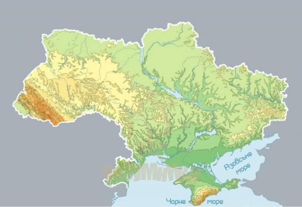
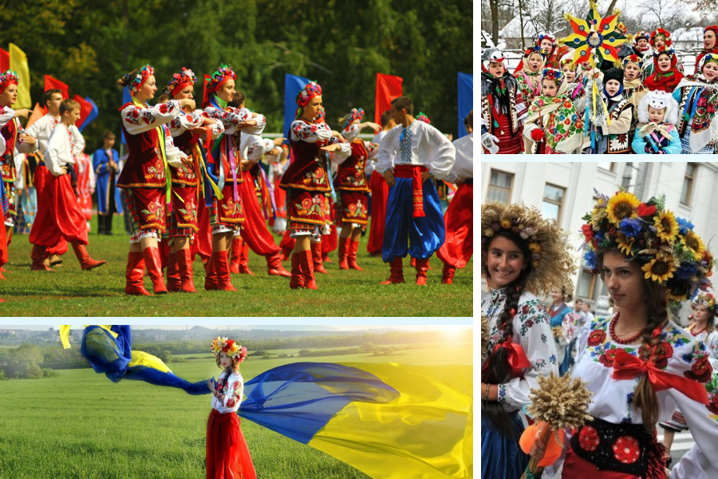
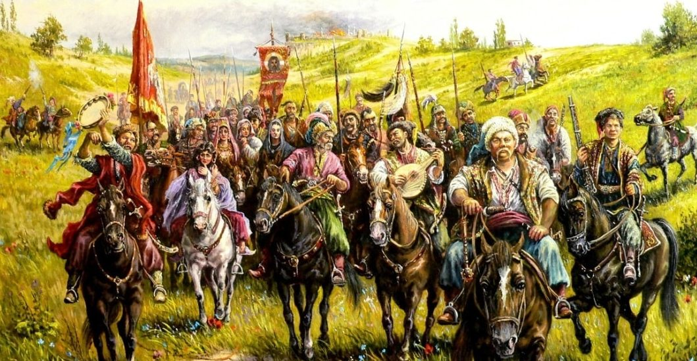

Географія
Україна — найбільша країна в Європі за площею. Її територія становить понад 600 тисяч квадратних кілометрів.
Вона простягається від Карпатських гір на заході до безкраїх степів і берегів Азовського та Чорного морів на півдні.
На півночі країна межує з Білоруссю, на сході та північному сході — з Росією, на заході — з Польщею, Словаччиною та Угорщиною, на південному заході — з Румунією та Молдовою.
Рельєф України переважно рівнинний, що сприяє розвитку сільського господарства.
Водночас країна має унікальні природні багатства: гори Карпати з найвищою вершиною Говерлою, мальовниче узбережжя Кримських гір, численні річки, серед яких найбільша — Дніпро.
Клімат України переважно помірно-континентальний, а на півдні, біля Чорного моря, спостерігаються риси субтропічного клімату.
Культура
Українська культура є багатогранною та різноманітною, адже формувалася протягом багатьох століть під впливом як власних традицій, так і культур інших народів.
Особливе місце в культурі займає українська мова — одна з наймилозвучніших мов світу. Вона зберегла давні слов’янські риси й водночас розвивалася в унікальному напрямку.
Невід’ємними символами української культури є вишиванка — традиційна сорочка з орнаментами, які несуть глибокий зміст і вважаються оберегами, та народна пісня, що відображає душу народу.
Україна відома багатими звичаями та святами: від Різдва з колядками й вертепами до святкування Івана Купала з вінками на воді та стрибками через вогнище.
Сучасна українська культура також активно розвивається — у музиці, літературі, кінематографі та візуальному мистецтві з’являються нові імена, які здобувають міжнародне визнання.
Історія
Історія України надзвичайно давня та багата. Вона сягає часів трипільської культури (V–III тисячоліття до н. е.), яка залишила по собі унікальні пам’ятки.
У IX столітті виникла держава Київська Русь зі столицею в Києві. Це була одна з найбільших і наймогутніших держав середньовічної Європи.
Саме з часів Київської Русі бере початок християнська традиція в Україні — у 988 році князь Володимир Великий охрестив Русь.
Протягом наступних століть українські землі неодноразово зазнавали впливу інших держав: Великого князівства Литовського, Польщі, Османської імперії, Московії та Австро-Угорщини.
Проте український народ завжди прагнув свободи.
Важливу роль у боротьбі за незалежність відіграли козаки, які у XVI–XVIII століттях створили Запорозьку Січ.
Це було унікальне військово-політичне об’єднання, що стало символом мужності та демократичних традицій.
У XX столітті українці неодноразово намагалися відновити свою державність: у 1917 році була проголошена Українська Народна Республіка, однак її існування було недовгим.
Після Другої світової війни Україна увійшла до складу Радянського Союзу.
24 серпня 1991 року Україна проголосила незалежність, яку підтвердив народ на референдумі 1 грудня того ж року.
Відтоді країна розвивається як самостійна держава, незважаючи на труднощі та виклики.